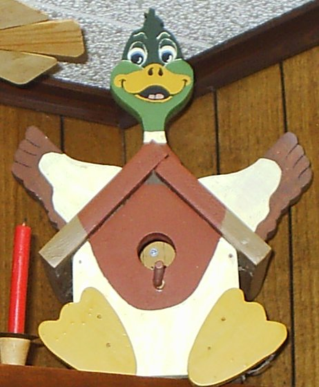
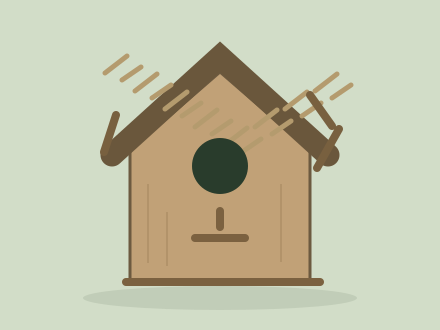

My Birdhouse
I chose a simple wooden shape with an angled roof and a porch. I liked the bark idea becuase it made the roof look more natural than plain timber.
Materials and measurements
The materials were class-supplied timber, plywood, nails, wood putty, perch material, sandpaper, bark and hot glue. These are the measurments from my project brief.
| Part | Amount | Size |
|---|---|---|
| Side panels | 2 | 140 × 140 mm |
| Front and back | 2 | 140 × 200 mm |
| Roof panels | 2 | 140 × 200 mm before trimming |
| Plywood base | 1 | 165 × 165 mm |
| Porch | 1 | 90 × 140 mm |
| Starting timber | 1 length | 1200 mm |
The seven timber pieces are the two sides, front, back, two roof pieces and porch. The plywood base is separate. Timber thickness, entrance size, roof angle and the cutting layout need checking against the teacher’s guide.
Parts of my design
- Entrance: the opening into the box. Its size needs to match the chosen bird.
- Porch and perch: features of the class design. Many real nest boxes do not need a perch.
- Angled roof: helps rain run off.
- Bark: adds a natural texture. It does not make the roof waterproof.
The class model still needs species-specific checks before being used outside, including drainage, ventilation, cleaning access and safe placement.
My design ideas
I looked at a plain wooden birdhouse, a bark-and-twig idea and a planter version. I chose the natural bark roof becuase it kept the main shape simple.

